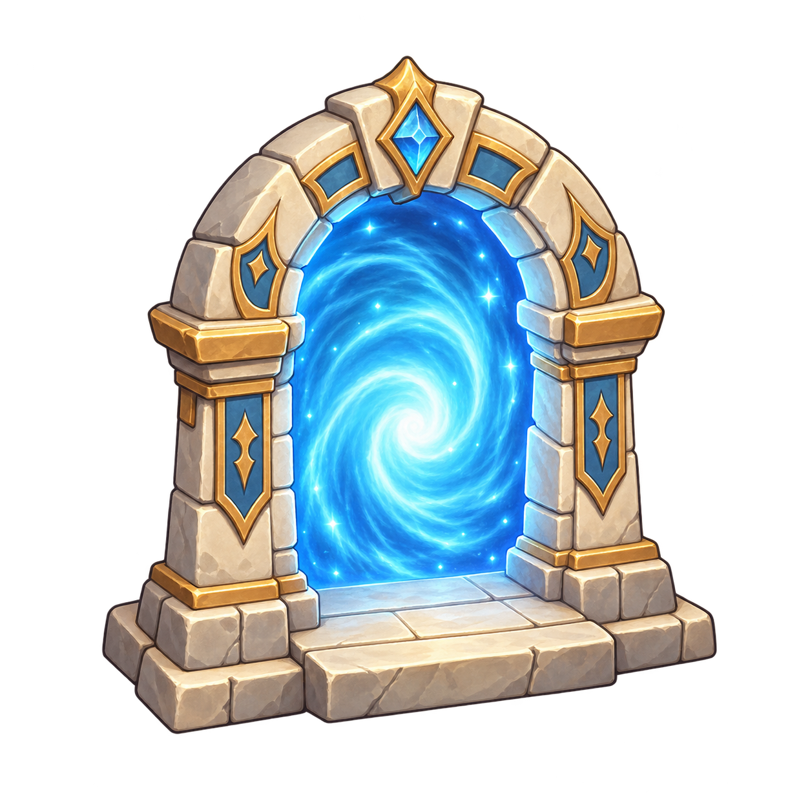
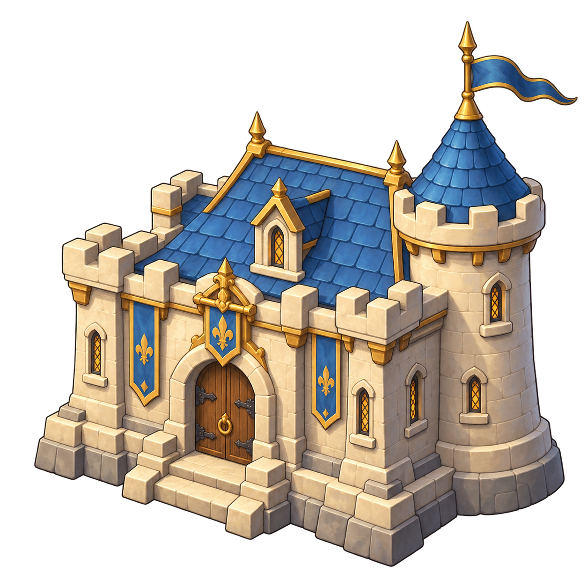
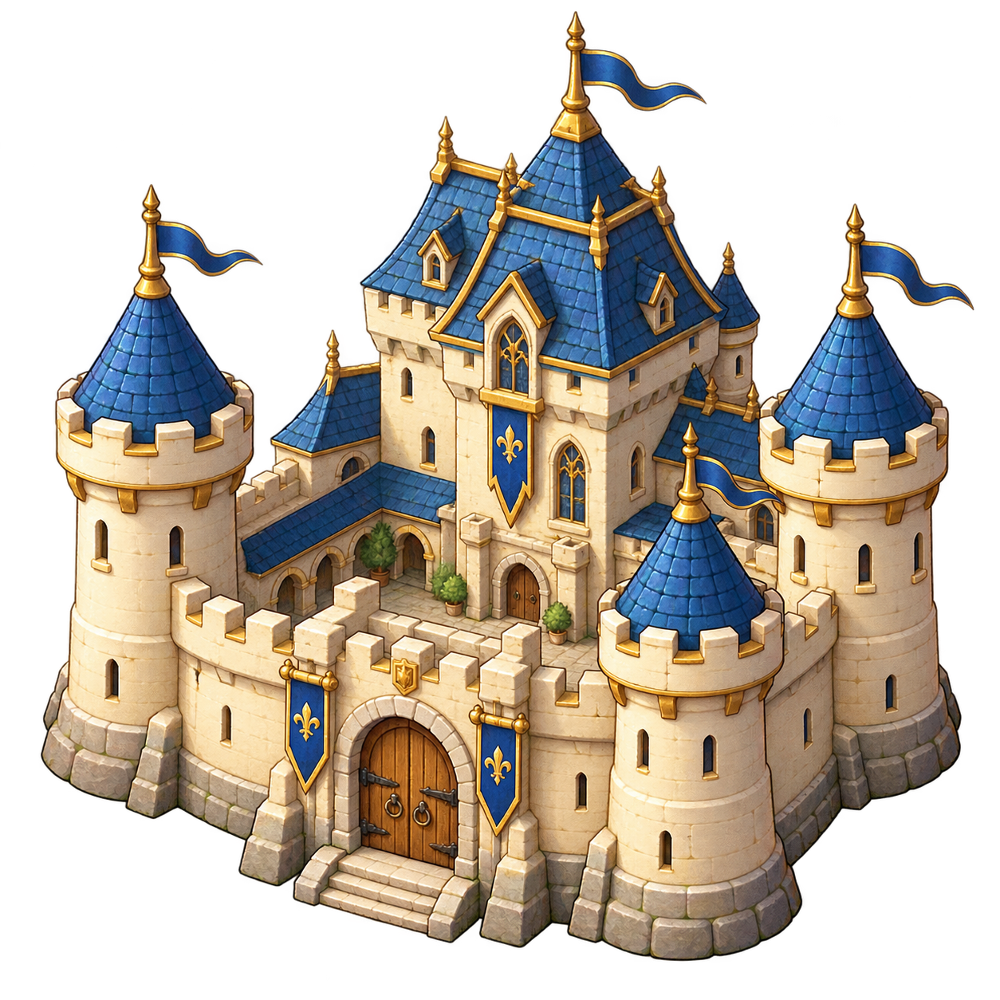
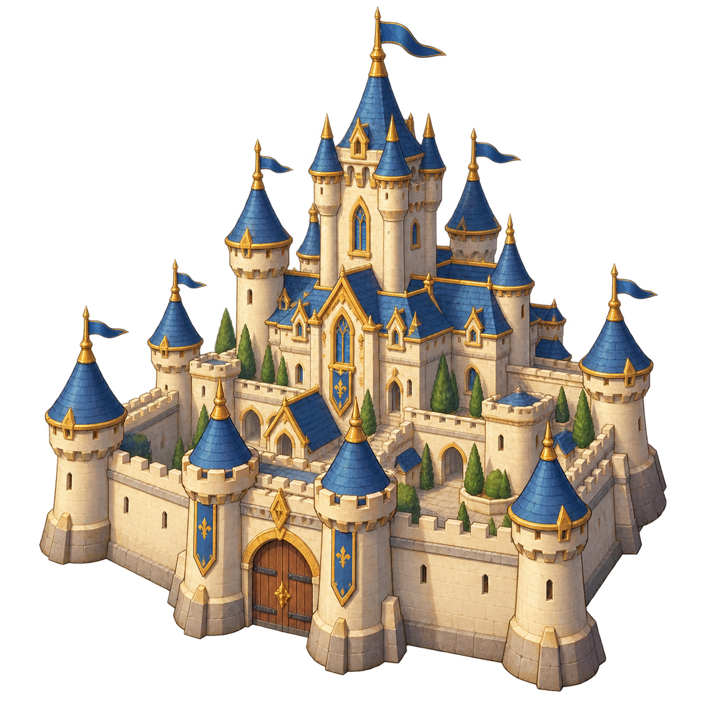

Portal_Blue_GoldEnvironment/Buildings_And_Props · 1254×1254 · Native RGBAOriginal generated imageGeneration prompt



NL-ARPG-SOFT-766DF2B7 · 4 × 1254×1254 RGBA · 2026-10-27
原始 PNG 与透明通道完整保留。查看全部223项



